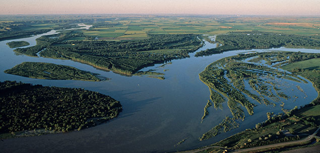

Estimating abundance and demographic rates of long-lived fish in the Missouri River
Michael E. Colvin, and others…
2017-03-08
Preface
This is work in progress, results are provisional and subject to change. Do not used or cite this material in any way

What is the purpose of this document
The Missouri River Pallid Sturgeon Effects Analysis
The need for a broadly defined Effects Analysis (EA) was recognized by the Missouri River Independent Science Advisory Panel (Doyle and others, 2011). The Panel wrote: “The development of an adaptive management plan should be preceded by and based upon an effects analysis that incorporates new knowledge that has accrued since the 2003 Biological Opinion”, referring to the U.S. Fish and Wildlife Service’s (USFWS) amended biological opinion for operation of the Missouri River mainstem reservoir system and maintenance of the Missouri River Bank Stabilization and Navigation Project, and operation of the Kansas River reservoir system (U.S. Fish and Wildlife Service, 2003). The concept of an effects analysis is explained by Murphy and Weiland (2011) as a systematic evaluation of the effects that a federal agency action that has the potential to harm a listed species. The three essential components of an EA are:
- Collection of reliable scientific information,
- Critical assessment and synthesis of available data and analyses, and
- Analysis of the effects of actions on listed species and their habitats.
The last step needs to be as quantitative as possible in order to forecast expected ecological costs and benefits of an action, and to evaluate trade-offs with socio-economic costs and benefits. The output of an EA provides a useful framework for ongoing assimilation of data from hypothesis-driven monitoring and research, if sufficiently quantitative, can be used to evaluate alternative management actions in structured decision making (Murphy and Weiland, 2014). In the ideal situation, an effects analysis includes quantitative population dynamics or population viability models that can be used to forecast population effects of management actions (Murphy and Weiland, 2011, 2014)
Structure of the book
The efforts documented in this book represent a iterative and integrative approaches to developing a monitoring program that:
- Meets the needs of ongoing adaptive management,
- Is compatible with the collaborative pallid sturgeon population model
- Is compatible with conceptual ecological models elicited during the effects analysis process, and
- Provides sufficiently reliable and precise population metrics to evaluate whether fundamental objectives have been achieved.
In many sections an iterative process was used to develop analyses and estimators with many simplifying assumptions (e.g., homogeneous capture and detection probabilities) and simulations performed to evaluate the precision and reliability of estimates. Because the Missouri River is a large river, simplifying assumptions are commonly violated and therefore assumptions were relaxed to evaluate precision and reliability of estimated values. The iterative relaxing of assumptions also allowed us to evaluation the potential consensuses of violating simplifying assumptions AWKWARD. The general structure for each analysis was:
- Simulate data using a plausible range of values (i.e., true values)
- Estimate values of interest and compare estimates to true values
- Bias
- Precision
- Reliability
- Simulate data from process models that violate estimate assumptions and estimate values. For example if an analysis assumed homogeneous capture probability, data was simulated using a process model with increasing heterogeneous capture probability to evaluate the consequences of this assumption.
This book is organized into 10 sections.
- Missouri River pallid sturgeon declines and recovery program
- Estimating pallid sturgeon abundance
- Estimating Pallid Sturgeon Demographic Rates
- Estimating Pallid Sturgeon Abundance and Demographic Rates
- Effort, cost, and logistics
- Monitoring, Learning, and Decision Making
- Assimilation and integrating monitoring, research and management
- Power of monitoring data to detect management effect
- Value of monitoring data
- Caveats and considerations
0.1 Workspace
$$
The survival is conditional on being alive (need to add temp migration)
\[Z_{i,t+1,S} ~ Bernoulli(\phi_{i,t,S}\cdot Z_{t}\cdot Z_{i,t,S})\]
The segment level abundance estimate at time \(t\) is the sum of fish that are alive and present
\[N_{t,S} = \sum_{i}^{P} Z{i,t,S}\]
Metrics and relevant parameters from RD that jive with USFWS objectives and metrics.